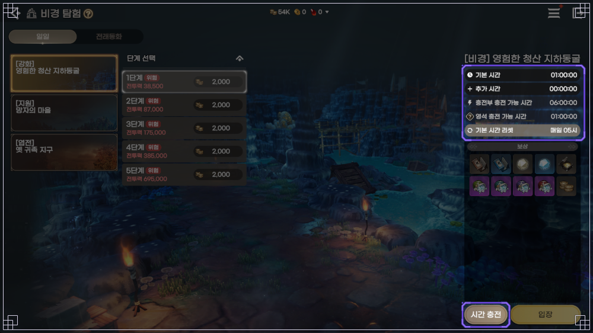

도깨비의세계 강화서 획득방법, 비경·필드 보스·상인회 어디서 나오나
도깨비의세계에서 강화서라고 부르는 장비 강화 비법서는 요귀 사냥과 임무 같은 각종 콘텐츠에서 나오고, 비경·필드 보스 상자·문파 상자·상인회·단각 교환에서도 얻을 수 있어요.
강화를 돌리다 보면 어느 순간 비법서가 모자라는 때가 오는데요, 어디를 돌아야 할지는 공식 글마다 알려 주는 정도가 달라서 곳별로 나눠 풀어 봤어요. 공식 표기는 장비 강화 비법서이고 일반·희귀·영웅·전설 네 등급인데, 장비와 같은 등급만 쓸 수 있어요. [자동 등록]을 누르면 개방 직전 최대 강화 레벨까지 비법서가 자동으로 골라지고, 모자라면 가진 수량까지만 강화돼요. 이 글은 10월 20일 공식 포럼 글 기준이에요. 10월 21일 개편 뒤에 달라진 건 인게임에서 확인해 주세요.
강화서는 어디서 나오고, 수량까지 공개된 곳은 어디인가요?
등급별 비법서 확률이 공개된 곳은 필드 보스 상자와 문파 랜덤 상자예요. 도전자 상자와 길라잡이 상자는 일부 수치만 나와 있고, 요귀 사냥·임무·비경은 나온다는 사실까지만 알려져 있어요.
수량은 안 나옴
수량은 안 나옴
단계별 수량 안 나옴
확률 나와 있음
확률 나와 있음
연결은 추정
가격은 인게임
횟수 한정
진한 분홍 배지는 공식 글에 확률이 적힌 곳이에요.
필드 보스와 문파 상자는 비법서가 나올 확률이 얼마인가요?
필드 보스의 강화 재료 전체 랜덤 상자는 일반·희귀·영웅 상자가 비법서 50%, 전설 상자가 33.33%이고, 문파 랜덤 상자는 일반 15%·희귀 10%·영웅 5%·전설 1%예요.
| 장비 등급 | 필드 보스 상자 단계 | 필드 보스 상자의 비법서 확률 | 문파 랜덤 상자 |
|---|---|---|---|
| 일반 | 1단계 | 50% | 15% |
| 희귀 | 2·3단계 | 50% | 10% |
| 영웅 | 4·5단계 | 50% | 5% |
| 전설 | 6단계 | 33.33% | 1% |
필드 보스는 참여자 전원이 누적 피해량에 따라 단계별 전리품 상자를 받는데요, 그 안의 강화 재료 전체 랜덤 상자에서 비법서와 가호의 정수 중 하나가 나와요. 전설 상자만 도술 강화 요령서 선택 상자까지 셋 중 하나예요. 몇 개가 나오는지는 확률표에 없어요. 이 확률은 10월 15일에 고친 확률표 기준이고, 10월 21일 업데이트의 확률 변경은 반영 전 값일 수 있어요(출처: 랜덤 상자 확률).
문파 랜덤 상자는 문파 활동에서 일정량의 문파 하트를 채우면 받는 상자예요(문파 가이드). 나머지 칸은 엽전 37%와 가호의 정수, 도술 강화 요령서 선택 상자로 채워져 있어요.
도전자의 N단계 S~D등급 달성 랜덤 상자에도 비법서 줄이 있어요. 5단계 S등급엔 전설 비법서 5개 줄이 81.96%로 적혀 있죠. 상자 안 백운 깃털 모자·옷이 레이드 백운의 보상과 겹쳐서 레이드 보상으로 보이는데, 공식이 따로 밝힌 건 아니라서 확실하진 않아요.
매일 돌리는 곳과 사서 채우는 곳은 어디인가요?
매일 시간을 들여 도는 곳은 비경 [강화] 영험한 청산 지하동굴이고, 모자란 등급은 상인회나 단각 교환으로 채울 수 있어요.
비경 [강화] 영험한 청산 지하동굴은 서사 임무 [첫걸음] 비경의 입구를 찾아서 7을 끝내면 열려요. 비경에는 [지원] 망자의 마을과 [엽전] 옛 귀족 지구도 있는데, 비법서는 [강화]의 주요 보상이에요(비경 탐험 가이드). 단계별 입장 전투력은 이래요.
- 1단계 38,500 · 2단계 87,000
- 3단계 175,000 · 4단계 385,000
- 5단계 695,000
기본 시간은 모든 비경을 합쳐 1시간이고 매일 05시에 초기화돼요. 비경 충전부로 최대 6시간, 영석으로 최대 1시간을 더 채워요. 기본 시간을 다 쓰면 그다음부터 추가 시간이 차감돼요.

[강화] 영험한 청산 지하동굴의 단계 선택 화면이에요. 보상 칸은 아이콘뿐이라 단계별 비법서 수량은 공식 그림에도 없어요.
이미지: 카카오게임즈 공식 포럼 가이드 7943 비경 탐험
사냥과 임무, 보물찾기에서도 나와요(공식 팁).
- 요귀 사냥은 공식 가이드가 획득처로 꼽은 곳인데, 어느 요귀가 얼마나 주는지는 안 적혀 있어요.
- 서사 임무는 장비 강화 비법서 같은 성장 재화를 보상으로 줘요.
- 보물찾기 상자 보상에는 가호 주머니·요혼석·화첩 조각·엽전과 함께 비법서가 들어 있어요.
- 길라잡이 추천 사냥터(공식 팁)는 권장 전투력을 채우면 강화 재료 선택 상자를 줘요. 영웅 상자는 영웅 비법서와 영웅 가호의 정수 중에서, 특별 상자는 전설 비법서·전설 가호의 정수·도술 강화 요령서 선택 첩 중에서 골라요. 예를 들어 황무지 마을 2는 전투력 150,000에 영웅 상자 6개, 요기의 동굴은 360,000에 특별 상자 5개예요. 희귀 강화 재료를 주는 길라잡이 둘러보기 보상은 캐릭터당 최초 1회예요.
상인회와 단각 교환은 사서 채우는 길이에요. 상인회는 메뉴의 정비 구역에 있고, 비경 탐험과 보스토벌은 바로 위 전투 및 모험 구역에 있어요.

메뉴에서 정비 구역 상인회를 누르면 돼요.
이미지: 카카오게임즈 공식 포럼 가이드 7988 상인회
- 복분이는 잡화 상점이라 엽전으로 회복 물약, 비법서, 가호의 정수, 도술 강화 요령서를 팔아요.
- 소분은 성장 지원 금전 상점이라 금전으로 비법서 등을 사는데요, 영웅·전설 비법서는 10월 14일 점검에서 구매 한도가 늘었네요(업데이트 공지).
- 단각 교환은 단 봉인해제 뒤에 열리고, 희귀·영웅·전설 비법서를 품목마다 일일·주간 횟수 안에서 바꿔요(공식 팁 · 단 봉인해제).
가격·구매 제한은 인게임에서 확인해 주세요.
내 장비 등급별로 어디부터 돌면 되나요?
비법서는 장비와 같은 등급만 쓰니까, 필드 보스에서 누적 피해량을 올려 내 장비 등급에 맞는 단계의 상자를 받는 게 가장 분명한 순서예요.
처음엔 어느 상자가 내 장비 등급 몫인지 헷갈리는데요, 아래 표에서 내 장비 등급이 나오는 상자 단계를 찾아보세요.
| 내 장비 등급 | 내 등급 비법서가 나오는 상자 단계(누적 피해량으로 정해짐) | 상자의 비법서 확률 | 함께 챙길 곳 |
|---|---|---|---|
| 일반 | 1단계 | 50% | 문파 랜덤 상자(15%) |
| 희귀 | 2·3단계 | 50% | 문파 랜덤 상자(10%), 단각 교환 |
| 영웅 | 4·5단계 | 50% | 문파 랜덤 상자(5%), 길라잡이 영웅 상자, 소분·단각 |
| 전설 | 6단계 | 33.33% | 문파 랜덤 상자(1%), 길라잡이 특별 상자, 소분·단각 |
- 필드 보스는 입문 임무 [길잡이]를 끝내야 열리고, 10월 19일부터 입장 전투력이 120,000이에요(공지).
- 출현 요일은 공식 가이드의 10월 19일 갱신 기준으로 산신 산군대호가 월·수·금·일, 해골장군이 화·목·토예요(보스토벌 가이드). 시간은 인게임 필드 보스 일정이나 아래 일정표 글에서 확인해 주세요.
- 어느 단계 상자를 받을지는 누적 피해량이 정해요. 라이브 Q&A에서는 보스를 처치하기 전에 나가면 보상을 받지 못한다고 안내했어요.
시간표는 필드보스 시간 요일별 일정표 글에 모아 뒀어요. 일반 등급 비법서 확률이 공개된 곳은 필드 보스 1단계 상자와 문파 랜덤 상자예요. 전설 장비는 6단계 상자의 비법서 확률이 33.33%라 영웅 이하(50%)보다 낮은데, 소분과 단각 교환에서도 전설 비법서를 다루니 가격과 횟수를 인게임에서 확인하고 같이 돌릴지 정하면 돼요. 참고로 10월 17~18일 라이브 감사 접속 보상으로 희귀 장비 강화 비법서가 지급 시간대마다 100개씩 나갔지만 이미 끝난 이벤트예요(보상 공지).
공식 글에 안 나와 있어요. 인게임 아이템 사전의 획득처와 상점 화면에서 직접 볼 수 있어요.
요귀 사냥에서 비법서를 주는 요귀와 확률 · 비경 [강화] 단계별 수량 · 임무별 수량 · 복분이가 파는 등급과 소분의 일반·희귀 비법서 취급 여부 · 단각 교환 비용과 횟수 · 선택 상자에서 고를 때 개수 · 필드 보스 단계를 나누는 누적 피해량 · 10월 21일 개편 이후 달라진 획득량
비법서를 어디에 쓰는지는 무기 추천과 장비 성장 순서 글에 적었어요. 개방·돌파·각성 순서도 거기서 볼 수 있어요.
도깨비의세계 강화서 자주 묻는 질문
Q. 필드 보스 순위 보상에도 비법서가 나오나요?
아니요, 기여도 순위 상자에는 금전만 들어 있어요. 비법서는 누적 피해량 보상 상자에서 나와요.
Q. 장비를 분해하면 비법서를 돌려받나요?
희귀 이상 장비를 분해하면 엽전을 뺀 일반 강화 재료를 100% 돌려받는다고만 공식이 적었고(분해 공지), 비법서가 거기 들어가는지는 안 밝혔어요.
Q. 도술 강화 요령서도 같은 곳에서 나오나요?
도술 강화 요령서는 도술을 키우는 재료라 비법서와 별개인데, 비경 [강화] 보상과 소분 판매 목록, 문파 랜덤 상자의 선택 상자에서 같이 나와요.
도깨비의세계 강화서 획득방법 정리
그래서 필드 보스 상자는 매번 챙기고, 전투력이 닿는 비경 [강화] 단계로 매일 시간을 쓰고, 모자란 등급만 상인회와 단각으로 채워 보시면 좋겠습니다.
✔ 도깨비의세계 같이 보기 좋은 내용
· 도깨비의세계 화첩 조각 얻는 법 4가지, 거래소는 안 돼요
· 도깨비의세계 무기 추천, 무기 5종 고르는 기준과 장비 강화 개방 돌파 각성 순서
· 필드보스 시간 요일별 일정표 글
참고한 곳
· 성장 게임 가이드(7739)
· 보스토벌 게임 가이드(7946)
· 랜덤 상자 확률(9262)
· 비경 탐험 가이드(7943)
· 상인회 가이드(7988)
· 문파 가이드(7870)
· 단 봉인해제(7838)
· 길라잡이 팁(8063)
· 임무·보물찾기 팁(14486)
· 단각 교환 팁(8076)
· 업데이트 공지(18403)
· 입장 전투력 변경 공지(396088)
· 라이브 감사 보상 공지(242548)
· 10월 9일 라이브 방송 종합 안내(12167)